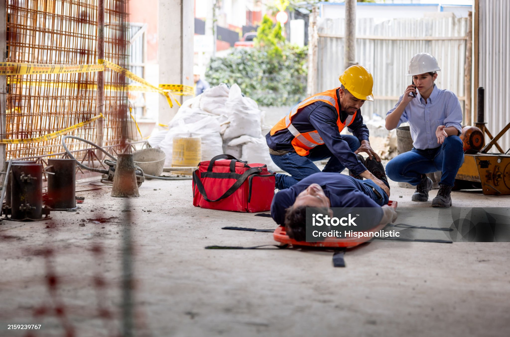

Este portal é mais que uma ferramenta — é uma ponte vital entre você e a segurança da sua comunidade. Em situações de emergência, cada segundo conta. Nosso app ajuda a monitorar alertas em tempo real, localizar moradores e indicar refúgios próximos, facilitando uma resposta rápida e organizada. Com ele, você não está sozinho: a informação precisa salva vidas, fortalece o apoio mútuo e transforma o caos em cooperação. Segurança é um direito de todos — e este app é o seu aliado para garantir que ninguém fique desamparado quando mais precisa.
Use as abas acima para navegar entre as páginas.
